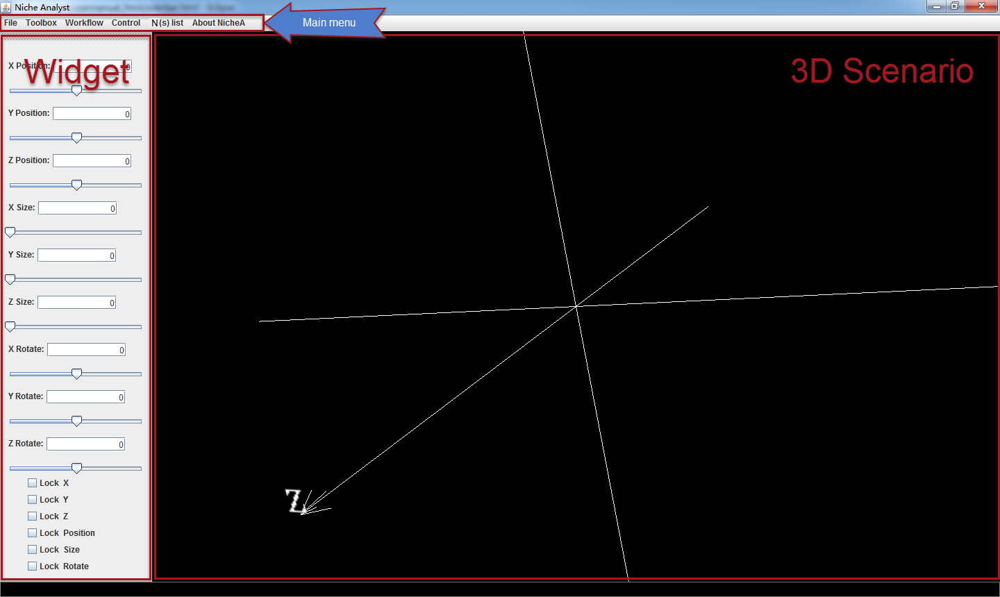

The graphical user interface (GUI)
There are three parts to GUI: the main menu, a group of widgets, and the 3D Scenario (E) (Fig.1).
Main Menu:
You can find and invoke all of the functions in NicheA from the main menu.
Widget:
The group of widgets is used to create a selection (a white ellipsoid with six red points and a green point) in E. The “Offset” sliders can control the center of the ellipsoid in three directions (X, Y, and Z). The “Zoom” sliders can set the length of the semi-axes of the ellipsoid. And the “Rotate” sliders can make the ellipsoid rotate along the specified axis. The “Lock” checkboxes are used to avoid misoperations by locking some of the sliders.3D Scenario
The virtual scenario in E space, which is used to display the background (BC), N, and other visible components.

Figure 1. The main frame. Using the widgets on the left to create virtual niches.